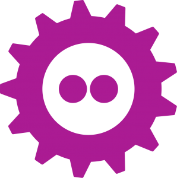

FOSDEM 2020 
Open Research Tools and Technologies
Julia Sprenger
17 Feb 2020
FOSDEM 2020
fosdem.org
- Free and Open source Software Developers' European Meeting
- Brussels 1-2 February 2020
- 8000+ participants
837 talks
- 100% live streamed
talks available online
Schedule
- 56 parallel developer rooms
- 7 main tracks
- Community and Ethics
- Containers and Security
- Databases
- Freedom
- History
- Internet
- Miscellaneous
Parallel tracks (devrooms)
Notes
Feedback to Challenges and opportunities in scientific software development
- questions
- Software carpentry - For general programming skills, not for our particular softwares
- How to better connect scientists to not duplicate software? - NFDI
- comments
- startup idea for collaborative workspace platform based on Jupyter Notebooks
- humanities have dedicated software engineers funded
- only innovative business departments use agile methods (e.g. some VW departements)
- how to convince research groups to test agile methods?
Highlights from other talks
open knowledge foundation
- making data available
- organize: licencing, data cleaning, ..
- dedicated data managers for cleaning, annotation of data, quality assurance, gaps...
create.frictionlessdata.io
- metadataformat: json
- packaging data + metadata
- validation: try.goodtables.io
- mistaken identifiers: gene name errors when using excel
- datapackage-pipelines
- bco-dmo.org